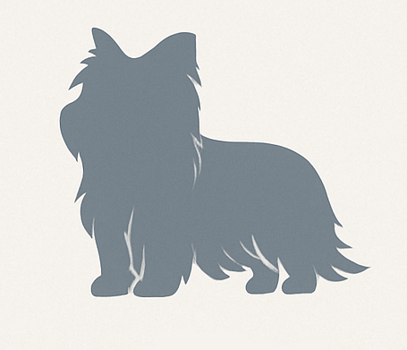

Patas Perdidas
Sobre Nós
Patas Perdidas nasceu da vontade de reunir pessoas que perderam seus animais de estimação com quem possa tê-los visto ou encontrado.
Criamos uma plataforma colaborativa onde tutores podem divulgar seus pets desaparecidos e outras pessoas podem informar se encontraram ou avistaram algum animal.
üê∂ Cachorro visto aqui ontem
üê± Gato laranja desaparecido
üìç √öltima localiza√ß√£o informada
üì¶ Animal resgatado e seguro
üêæ Animal desaparecido recentemente
Perdeu ou encontrou um animal?
Preencha o formulário e ajude a reunir vidas com seus lares!
Animais Perdidos

Nome: Fubá
Desaparecido em: 10/07/2025
Última localização: Rua das Flores
Desaparecido em: 10/07/2025
Última localização: Rua das Flores
Nome: Luna
Desaparecido em: 28/06/2025
Última localização: Av. Central
Desaparecido em: 28/06/2025
Última localização: Av. Central
Nome: Chico
Desaparecido em: 15/07/2025
Última localização: Praça do Sol
Desaparecido em: 15/07/2025
Última localização: Praça do Sol
Nome: Amora
Desaparecido em: 01/08/2025
Última localização: Rua Azul
Desaparecido em: 01/08/2025
Última localização: Rua Azul
Nome: Simba
Desaparecido em: 22/07/2025
Última localização: Bairro Jardim
Desaparecido em: 22/07/2025
Última localização: Bairro Jardim

Nome: Thor
Desaparecido em: 29/07/2025
Última localização: Vila Nova
Desaparecido em: 29/07/2025
Última localização: Vila Nova